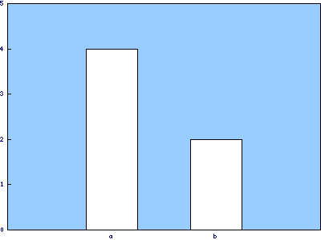

Compare your results with others or you can just continue the course by reading the → conclusion

»Challenge Answers Comparison«
Conflicts of interest are important to identify because
a: they can undermine the public trust in science.
b: in clinical studies they may have health implications for consumers.
c: they are not always financial in nature and therefore may be difficult to identify.
d: All of the above.
The core ethical value that is essential to all science is
a: trust.
b: bias.
c: patient safety.
d: All of the above.
Financial conflicts of interest are considered
a: tangible conflicts of interest.
b: intangible conflicts of interest.

A conflict of interest is considered a form of research misconduct.

The National Institutes of Health (NIH), the US Food and Drug Administration (FDA), and the National Science Foundation (NSF) have identified minimum thresholds for equity or stock ownership that must be reported by investigators.

Disclosure and oversight are the most common measures for managing conflicts of interest.
An investigator cannot have both tangible and intangible conflicts of interest at the same time.
Federal guidelines have been issued for institutional conflicts of interest.


continue the course by reading the → case study